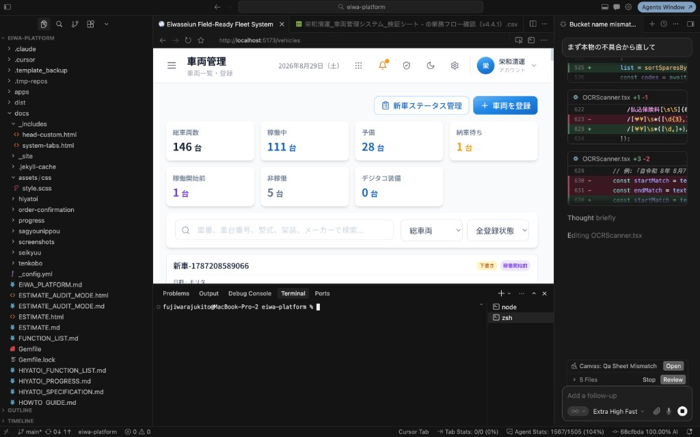
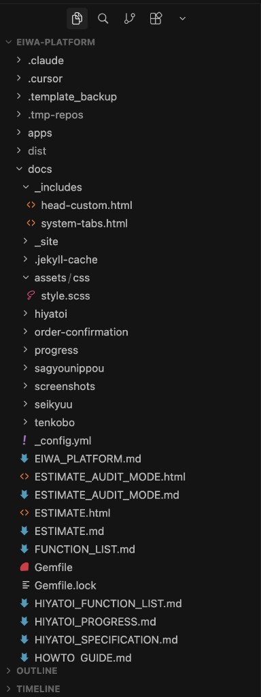
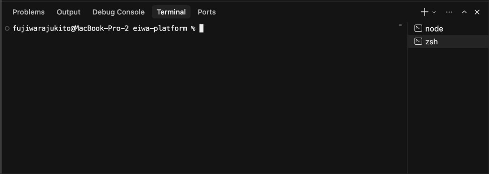
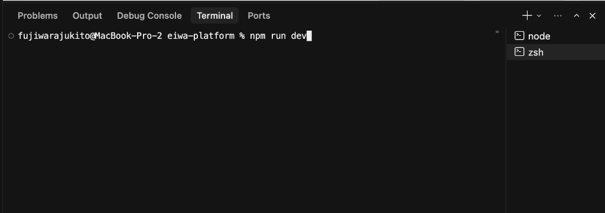
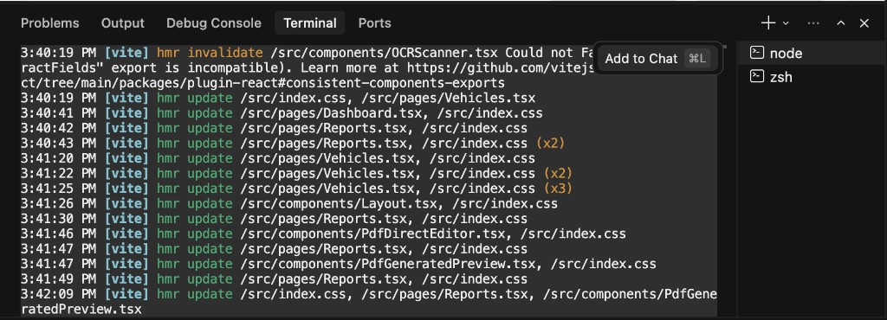
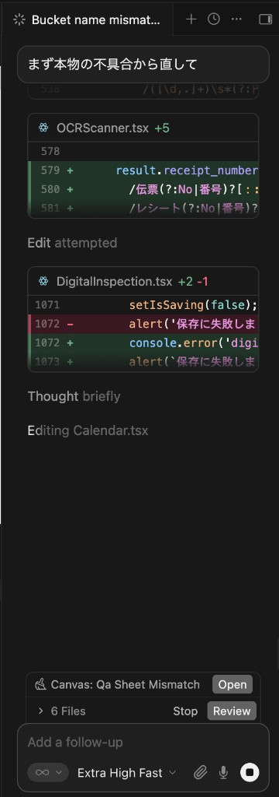
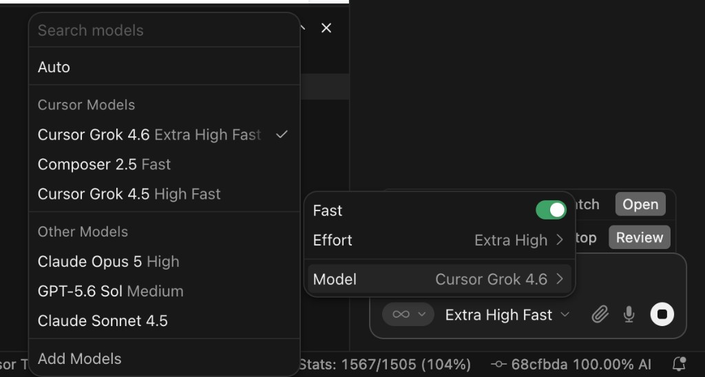

Cursor
自分のPCの中でコードを書く場所です。サイトの編集・開発はすべてここから始まります。
ひとことで言うと
Cursorは、AIが組み込まれたコードエディタです。お客様に説明するときは「サイトの中身を書き換える作業用アプリ」と言えば十分です。ここで直しても、まだ自分のPCの中だけの変更で、公開サイトには一切影響しません。
「Cursorで直した ＝ サイトが変わった」ではありません。ここを混同すると、直したはずなのに反映されないという相談が増えます。公開までには GitHub Desktop → GitHub → Netlify を通ります。
画面の見方
Macでは、よく使う場所の出し入れは次のキーです。消えて慌てたら、もう一度同じキーを押すと戻ります。
| 場所 | 何をするか | Macのキー |
|---|---|---|
| 左のフォルダ一覧 | 案件のファイルを探す | ⌘ + B |
| 下のターミナル | コマンドを打つ・ログを見る | ⌘ + J（パネル） / Ctrl + `（ターミナル） |
| 右のチャット | 日本語で直してもらう | ⌘ + L |
| 保存 | 今開いているファイルを書き出す | ⌘ + S |
| ファイルを名前で開く | フォルダを辿らずに探す | ⌘ + P |


⌘ + B で出したり隠したりします
⌘ + J でパネルを出しますサイトを自分のPCで見る
案件のフォルダを開いたら、下のターミナルで起動コマンドを打ちます。よく使うのは次です。
npm run dev
Enterを押すと、自分のPCの中だけでサイトが動き出します。出てきた localhost のURLをブラウザで開いて、直した内容を確認します。この時点では、まだ公開サイトは変わりません。

npm run dev。ターミナルに打って Enter ですターミナルにエラーが出たとき
コマンドを打ったあと赤い文字や英語の長い行が出たら、自分で訳さなくて大丈夫です。
- エラーの行をドラッグして選択する。
- 右上に Add to Chat（
⌘ + L）が出る。 - それを押すと、選んだ内容が右のチャットに入る。
- 「このエラーを直してください」と送る。

NetlifyのFailedと同じ考え方です。英語のログは、そのまま渡せば Cursor が読みます。
作業の流れ
- 案件のフォルダをCursorで開く（File → Open Folder）。または GitHub Desktopの Open in Cursor。
- ターミナルで
npm run devを打って、自分のPCでサイトを見る。 - 左のファイル一覧から、直したいファイルを選ぶ。
- 直す。文章だけの修正なら、HTMLの日本語部分だけを書き換える。
- 保存する（
⌘ + S）。保存しないと次の工程に出てきません。 - ブラウザで見た目を確認する。
- GitHub Desktop に移り、コミットとプッシュをする。
AIに頼むとき
右のチャットに、日本語で書きます。⌘ + L で開きます。スクショを添付して「このエラーを直してください」と頼む使い方も、NetlifyのFailed で使います。
チャット（⌘ + L）
「このページに〇〇のセクションを足して」のように、日本語で頼めます。
- 直したいファイルを開いた状態で聞く
- どのファイルの、どこを、どう変えたいかを書く
- 提案された変更は Review で自分の目で読んでから通す
インライン編集（⌘ + K）
選んだ範囲だけを直したいときに使います。
- 直す範囲を選択してから呼び出す
- 「文言をやさしくして」など、小さく頼む
- 一度に大きく頼むと、関係ない場所まで変わる

モデルの切り替え
チャット下のモデル名をクリックすると、使うAIを変えられます。普段の文言直しは速め、難しい不具合は強め、で十分です。迷ったら今選ばれているままで進めてください。

AIの提案をそのまま通さないでください。お客様の実名データ、ID、パスワード、社内金額をチャットに貼らないのも同じ理由です。判断の責任は、最後まで実装リードにあります。
やってはいけないこと
| これをすると | こうなる |
|---|---|
| 保存せずにGitHub Desktopを開く | 変更が見つからず、古いままクラウドに送られる |
| 何日分もまとめて直す | どこで壊れたか分からなくなり、戻せない |
| パスワードやAPIキーをファイルに直書きする | GitHubに残り、消しても履歴から取り出せてしまう |
| 他の人の作業中に同じファイルを直す | プッシュのときに変更が衝突する |
次に進む合図
- 直したファイルをすべて保存した
- ブラウザで見た目を自分で確認した
- パスワードやお客様の実名データを書いていない